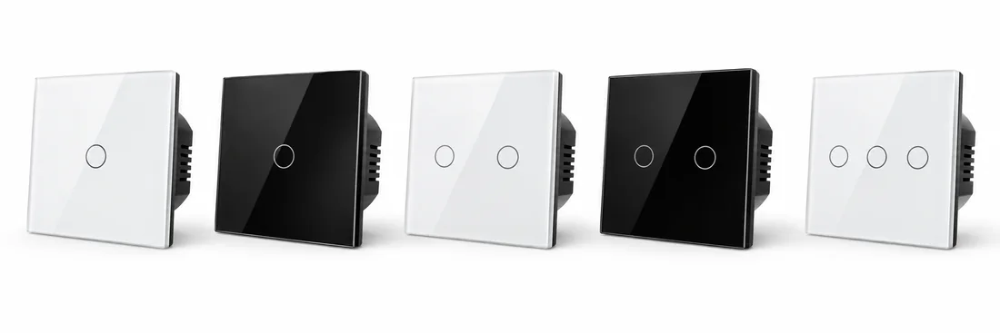
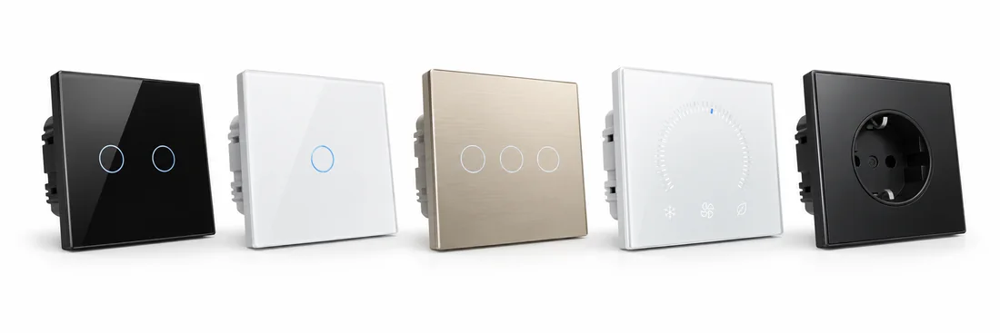

Smart Switch
- Glass panel assembly
- Touch function testing
- Final appearance inspection
Eight key parts, integrated through precise manufacturing, become a reliable smart switch.


Modern SMT production ensures stable quality from the first solder joint to the final inspection.


Check component quality before production.

Accurate and consistent solder paste deposition.

High-speed, high-precision component placement.

Stable temperature control for reliable soldering.

Automated optical inspection to ensure soldering quality.
Skilled assembly and strict process control turn quality components into reliable products.

Install main PCB and electronic components.

Assemble and secure terminals.

Fit the rear housing and ensure proper alignment.

Install the frame for structural support.

Install the glass front panel and complete the assembly.
Every product is configured, tested and verified to ensure it works reliably out of the box.

Wire the product to a test system.
Upload parameters and network settings.
Check startup and system status.
Test touch, control and smart functions.
Confirm all functions pass before packaging.
Tailored manufacturing and testing processes for each product type.


The same rigorous manufacturing system supports both standard and customized products.
Mature design, stable quality, ready for global markets.

Flexible development to meet your specific requirements.

Learn more about our manufacturing process, quality control, testing and customization services.